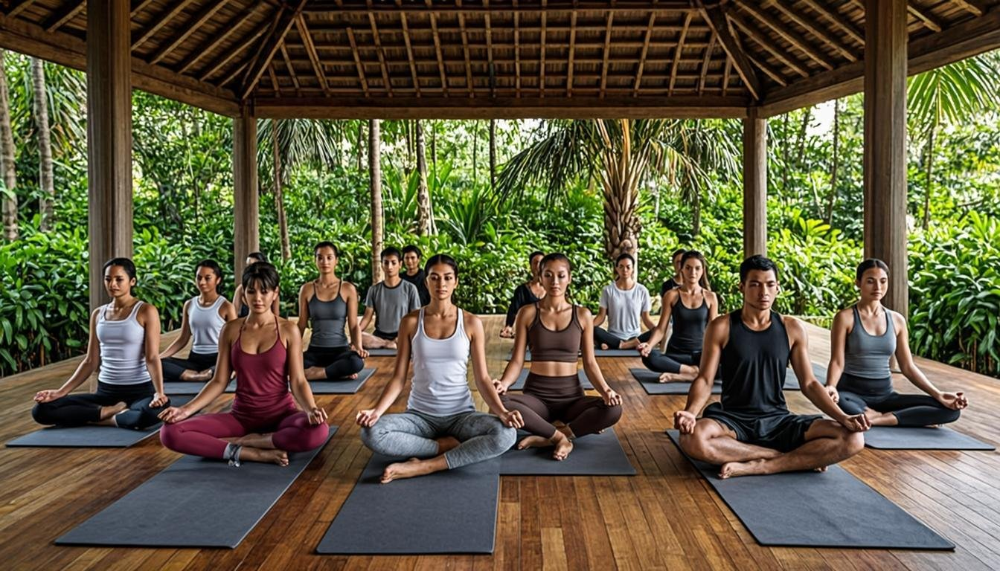
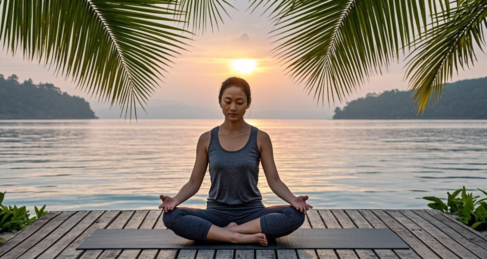
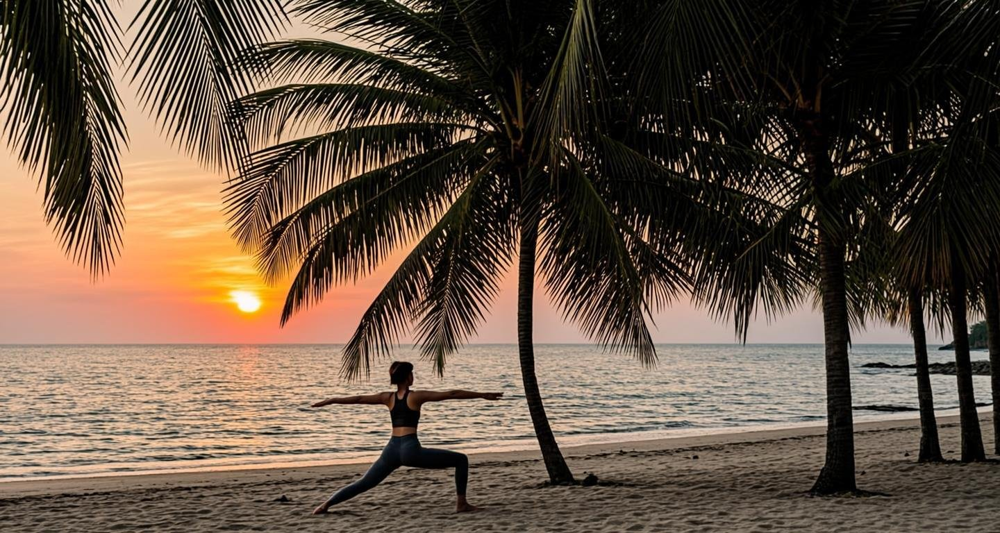
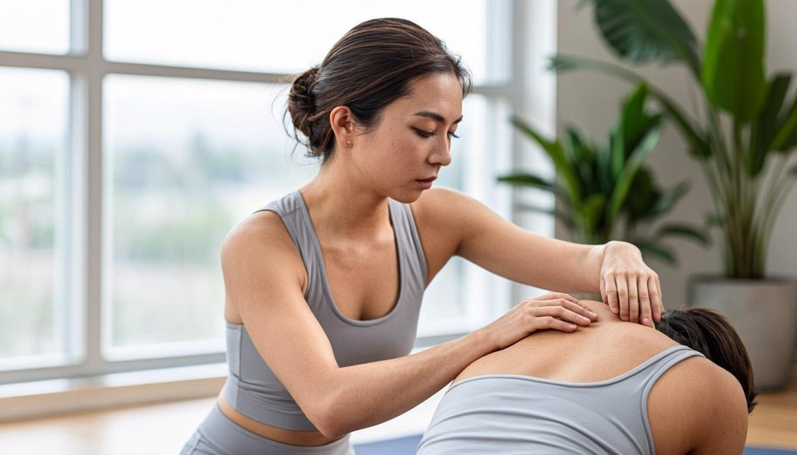
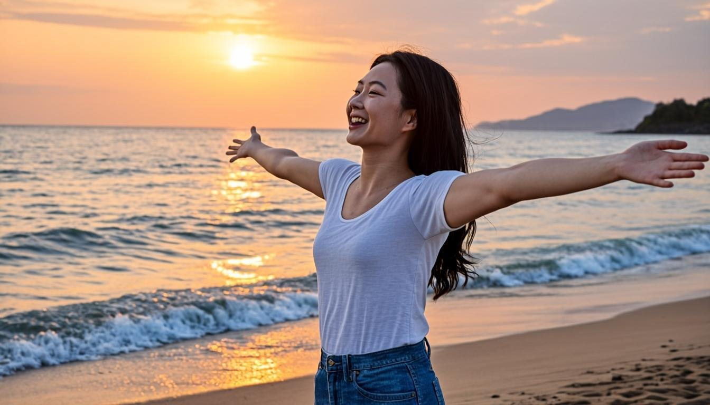
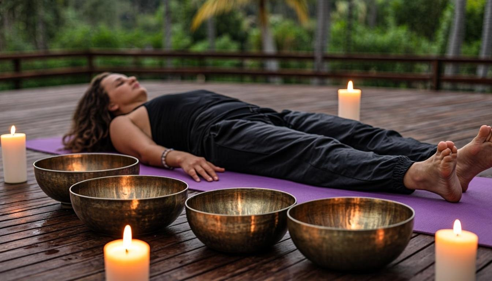
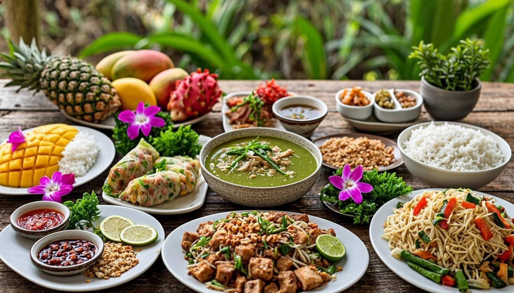
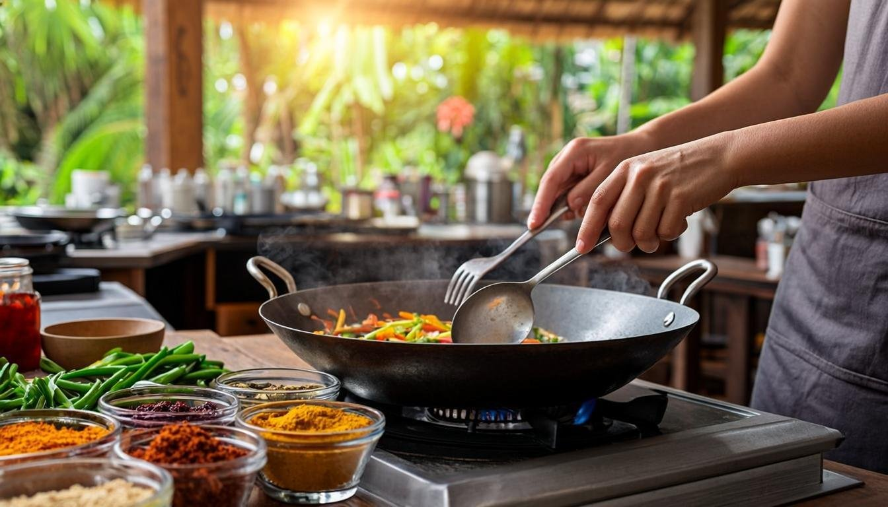
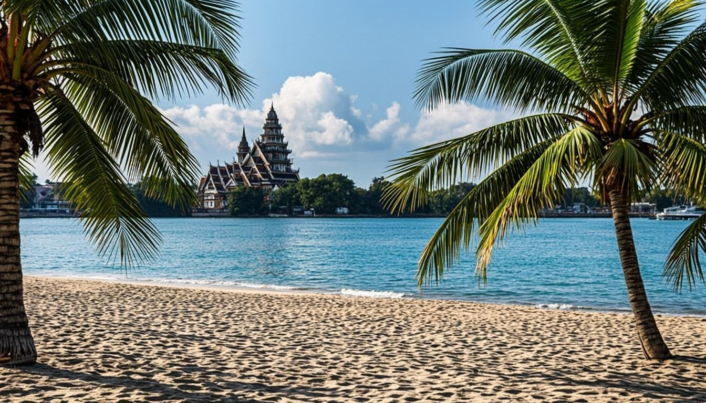

Ретрит-перезагрузка в Хуахине · Полная программа
АРХИТЕКТУРА ТЕЛА
И МЕНТАЛЬНЫЙ ДЕТОКС
Позвольте себе роскошь замедлиться и вернуть внутреннюю опору на королевском курорте Таиланда. Этот ретрит — бережное путешествие к истинному «Я», где мощные сакральные традиции Востока соединяются с современной терапией тела, эстетикой тропиков и экзотическими вкусами Сиама.
- 🧘 Хатха-йога Бихарской школы (Индия)
- ✨ Для новичков и продвинутых
- 🌅 Утренние и вечерние практики
- 🔔 Живые поющие чаши
- 🍍 Вегетарианское меню Сиама
О программе
БЕРЕЖНОЕ ПУТЕШЕСТВИЕ К ИСТИННОМУ «Я»
Позвольте себе роскошь замедлиться и вернуть внутреннюю опору на королевском курорте Таиланда. Хуахин встречает вас тропической зеленью, океанским бризом и духом умиротворения — идеальной средой, чтобы выключить внешний шум и услышать себя.
Этот ретрит — бережное путешествие к истинному «Я», где мощные сакральные традиции Востока соединяются с современной терапией тела, эстетикой тропиков и экзотическими вкусами Сиама.
Практика Хатха-йоги на ретрите передается в первозданном виде — по традициям легендарной Бихарской школы (Индия). Это признанный во всем мире эталон комплексного подхода, который плавно и глубоко развивает и тело, и сознание.
Программа выстроена настолько экологично, что она идеально подойдет как для новичков, так и для продвинутых практиков.
Программа
ЧТО ВАС ЖДЁТ В НАШЕЙ ПРОГРАММЕ?



Программа 01
АУТЕНТИЧНЫЕ УТРЕННИЕ
И ВЕЧЕРНИЕ ПРАКТИКИ
Вы прикоснетесь к йоге в ее истинном, глубоком понимании. Мы будем мягко пробуждать энергию в начале дня и полностью освобождать ум от ментального шума и стресса по вечерам. Вас ждут глубокие дыхательные и медитативные настройки на внутреннюю ось и кристальную ясность, а также вечерние расслабляющие сессии для идеального сна.


Программа 02
ЛАБОРАТОРИЯ ОСАНКИ
И БИОМЕХАНИКА
Осознанные классы, посвященные вашей спине и скрытым ресурсам тела. Мы займемся детальной отстройкой позиций и проработкой глубоких мышц-стабилизаторов. Через специальные деликатные техники и микродвижения мы мягко сотрем мышечные зажимы, запустим процесс естественной коррекции осанки и вернем телу легкость и королевскую стать.

Программа 03
ЗВУКОВАЯ ТЕРАПИЯ
(САУНДХИЛИНГ)
Кульминация нашего погружения и финальный аккорд дня — медитация под чарующие живые вибрации поющих чаш. Звуковые волны доберутся до самых глубоких тканей и каждой клетки вашего тела, запуская процессы восстановления и даря состояние абсолютного блаженства.
Сиам на вкус
ВКУС И КОЛОРИТ ТАИЛАНДА
Ретрит — это не только практика: это гастрономия, кулинарные открытия и атмосферный королевский город, наполненный тропической зеленью и океанским бризом.



Результат
ЧТО ВЫ УНЕСЕТЕ С СОБОЙ?
- 💎Чувство глубокого обновленияБудто после полноценного отпуска — свежесть тела и ясность ума.
- 📐Королевскую осанку и легкость в телеА также новое понимание движений и ресурсов своего тела.
- ⚖️Действующие инструменты балансаПрактики для поддержания равновесия в повседневной жизни.
- 🤝Новые вдохновляющие знакомстваИ яркие, сочные воспоминания о тропиках и Сиаме.
НАЧНИТЕ ПУТЕШЕСТВИЕ К СЕБЕ
Расскажем о ближайших датах, проживании и деталях программы. Напишите нам — и позвольте себе роскошь замедлиться на королевском курорте Таиланда.
Телефон: 086-955-6935 · Бесплатный трансфер из всех отелей Хуахина
← Краткая страница ретрита